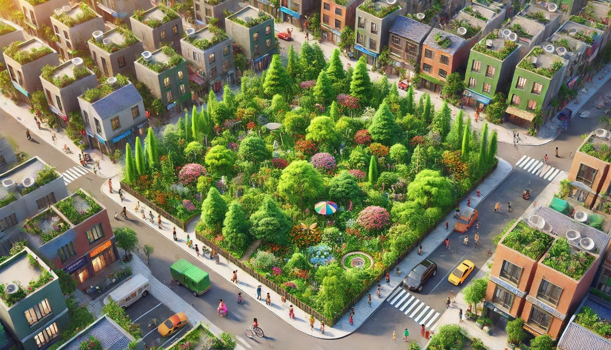

Miyawaki forests were a method ofafforestation pioneered by Dr. AkiraMiyawaki, a Japanese botanist and ecologist. This method emphasises thecreation of dense, fast-growing, and biodiverse native forests in small areas.It has gained global recognition for its potential to restore degradedecosystems and combat climate change.
https://www.creatingtomorrowsforests.co.uk/blog/the-miyawaki-method-for-creating-forests
Key Features of Miyawaki Forests
- Only native species are used, ensuring that the forest aligns
with the local climate, soil, and biodiversity.
- The trees are planted very close
together, resulting in multiple layers of vegetation (Shrubs – Canopy
trees)
- Miyawaki forests grow 10 times faster than conventional
plantations, they can mimic a 100year old natural forest in just 20-30
years.
- Once established (2–3 years), the forests become
self-sustaining and require minimal or no human intervention.
- They are suitable for urban and
small spaces, making
them a great solution for cities and degraded land.

Benefits of Miyawaki Forests
- Biodiversity: Supports a wide range of flora and fauna, creating a balanced ecosystem.
- Climate Action: Absorbs more carbon dioxide compared to monoculture plantations.
- Improved Air Quality: Acts as a natural air filter by absorbing pollutants.
- Cooling Effect: Reduces the heat island effect in urban areas.
- Groundwater Recharge: Enhances soil health and helps retain water.
- Community Engagement: Often involves local communities, promoting environmental awareness.
Criticism or Limitations
- Cost: Initial costs can be higher due to soil preparation and dense planting.
- Space Requirements: Although suitable for small areas, extremely small plots may limit biodiversity.
- Short-Term Dependency: Requires intensive care in the first 2–3 years.
- Lack of Awareness: Some regions may lack knowledge of native species or ecological restoration techniques.
Realife Examples in the UK
https://earthwatch.org.uk/program/tiny-forest
https://www.north-norfolk.gov.uk/tasks/projects/miyawaki-forest-project
https://www.sugiproject.com/forests/forest-of-thanks
https://www.nature.scot/climate-change/nature-based-solutions/wee-forests-part-tinyforest-global-family
https://www.thehabitatgroup.uk/capton-miyawaki-forest
Links to ARSINOE SPECFIC studies: Torbay
https://www.facebook.com/torbaycouncil/photos/cop29-cop29torbay-greenerwaytorbayits-been-great-showcasing-local-projects-tackl/993339679493906/?_rdr
https://www.torbay.gov.uk/council/climate-change/cop29-torbay-case-studies/
https://www.devon.gov.uk/drip/